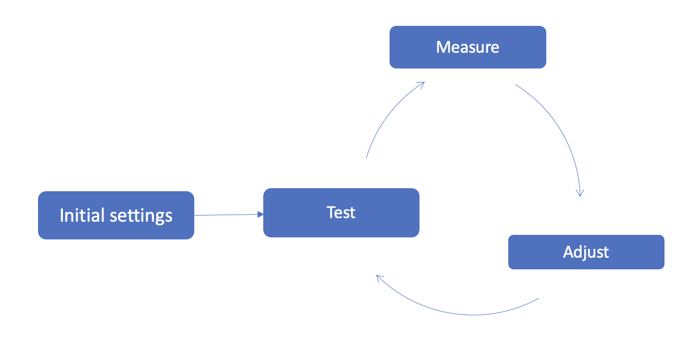

비용 최적화 - 소개¶
AWS 클라우드 이코노믹스(Economics)는 고객이 Amazon EKS와 같은 최신 컴퓨팅 기술을 채택하여 효율성을 높이고 비용을 절감할 수 있도록 지원하는 분야입니다. 이 분야에서는 4가지 기반원칙(Pillar)으로 구성된 "클라우드 재무 관리(CFM) 프레임워크"라는 방법론을 따르는 것을 권장합니다.

See 원칙: 측정 및 책임¶
See 원칙는 클라우드 지출을 측정, 모니터링 및 결정하는 방법을 정의하는 기본 활동 및 기술 세트입니다. 이를 흔히 "옵저버빌리티", "계측" 또는 "텔레메트리"라고 합니다. "옵저버빌리티" 인프라의 기능 및 한계에 따라 최적화할 수 있는 항목이 결정됩니다. 어디서부터 시작해야 하는지를 알아야 하므로 비용을 명확하게 파악하는 것이 비용 최적화의 중요한 첫 단계입니다. 이러한 유형의 가시성은 환경을 더욱 최적화하기 위해 수행해야 하는 활동 유형을 안내하기도 합니다.
다음은 See 기둥의 모범 사례에 대한 간략한 개요입니다.
- 워크로드에 대한 태깅 전략을 정의하고 유지 관리합니다.
- 인스턴스 태깅 을 사용하면 EKS 클러스터에 태그를 지정하여 개별 클러스터 비용을 확인하고 비용 및 사용 보고서에 비용을 할당할 수 있습니다.
- Kubecost 와 같은 기술을 사용하여 EKS 사용에 대한 보고 및 모니터링을 설정합니다.
- 클라우드 인텔리전스 대시보드 활성화, 리소스에 적절한 태그를 지정하고 시각화를 사용하여 비용을 측정하고 추정할 수 있습니다.
- 애플리케이션, LOB(Line of Business) 및 수입원 워크로드 등에 클라우드 비용을 할당합니다.
- 효율성/가치 KPI를 정의, 측정하고 비즈니스 이해 관계자와 함께 공유합니다. 예를 들어 거래당 비용을 측정하는 "단위 지표" KPI를 만들 수 있습니다. 예를 들어, 차량 공유 서비스에는 "승차 당 비용"에 대한 KPI가 있을 수 있습니다.
이 기반원칙과 관련된 권장 기술 및 활동에 대한 자세한 내용은 이 가이드의 비용 최적화 - 옵저버빌리티 섹션을 참조하십시오.
Save 원칙: 비용 최적화¶
이 기반원칙은 "See" 기반원칙에서 개발된 기술과 역량을 기반으로 합니다.일반적으로 다음과 같은 활동이 이 기반원칙에 속합니다.
- 환경에서 불필요한 부분을 식별하고 제거하세요.
- 비용 효율성을 위한 아키텍쳐를 구성하고 디자인하세요.
- 최적의 구매 옵션(예: 온디맨드 인스턴스와 스팟 인스턴스)을 선택하세요.
- 서비스가 발전함에 따라 (또는 AWS 서비스가 발전함에 따라) 서비스를 효율적으로 사용하는 방법도 달라질 수 있습니다. 이러한 변화에 맞춰 적극적으로 적용하세요.
이러한 활동은 운영되므로 환경의 특성에 따라 크게 달라집니다. 비용의 주요 동인은 무엇인지 스스로 자문해 보세요. 다양한 환경이 제공하는 비즈니스 가치는 무엇입니까? 각 환경에 가장 적합한 구매 옵션과 인프라(예: 인스턴스 패밀리 유형)는 무엇입니까?
다음은 EKS 클러스터에서 가장 일반적으로 비용을 유발하는 목록 순위입니다.
- 컴퓨팅 비용: 여러 유형의 인스턴스 패밀리, 구매 옵션을 결합하고 확장성과 가용성의 균형을 맞추려면 신중한 고려가 필요합니다. 자세한 내용은 이 가이드의 비용 최적화 - 컴퓨팅 섹션을 참조합니다.
- 네트워킹 비용: EKS 클러스터에 3개의 AZ를 사용하면 잠재적으로 AZ 간 트래픽 비용이 증가할 수 있습니다. HA 요구 사항과 네트워크 트래픽 비용 절감의 균형을 맞추는 방법에 대한 권장 사항은 이 가이드의 비용 최적화 - 네트워킹 섹션을 참조합니다.
- 스토리지 비용: EKS 클러스터의 워크로드 스테이트풀/스테이트리스(Stateless) 워크로드 특성과 다양한 스토리지 유형이 사용되는 방식에 따라 스토리지는 워크로드의 일부로 간주될 수 있습니다. EKS 스토리지 비용과 관련된 고려 사항은 이 가이드의 비용 최적화 - 스토리지 섹션을 참조합니다.
Plan 원칙: 플래닝 및 예측¶
See 기반원칙의 권장 사항이 구현되면 클러스터는 지속적으로 최적화됩니다. 클러스터를 효율적으로 운영해 본 경험이 쌓이면 계획 및 예측 활동은 다음 사항에 집중할 수 있습니다.
- 동적으로 클라우드 비용의 예산을 책정하고 예측합니다.
- EKS 컨테이너 서비스가 제공하는 비즈니스 가치를 정량화합니다.
- EKS 클러스터 비용 관리를 IT 재무 관리 계획과 통합합니다.
Run 원칙¶
비용 최적화는 지속적인 프로세스이며 점진적인 개선이 수반됩니다.

이러한 유형의 활동에 대한 경영진 후원을 확보하는 것은 EKS 클러스터 최적화를 조직의 "FinOps" 노력에 통합하는 데 매우 중요합니다. 이를 통해 EKS 클러스터 비용에 대한 이해를 공유하고, EKS 클러스터 비용 가드레일을 구현하고, 도구, 자동화 및 활동이 조직의 요구에 맞게 발전하도록 함으로써 이해 관계자를 조정할 수 있습니다.